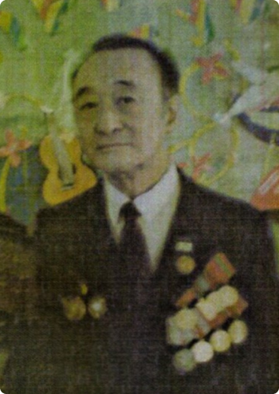

ПАК ВАЛЕРИЙ ПАВЛОВИЧ
Пак Валерий Павлович. Блокадник
Валерий Павлович Пак родился в 1937 году в Ленинграде. Вместе с матерью и братом пережил страшное блокадное время. В 1945 году семья переехала в БССР, где во время войны партизанил отец Валерия Павловича. После окончания Минского государственного педагогического института иностранных языков Пак занимался преподавательской деятельностью. С момента создания Станции юных техников Фрунзенского района (СЮТ) в 1981 году работал методистом. На протяжении многих лет Валерий Павлович вёл кружок начального технического моделирования, приобщая сотни мальчишек к сложному и интересному миру технического творчества. Кроме того, Валерий Павлович вёл кружок английского языка, был художником-оформителем ЦТДиМ "Эврика".
Имеет 10 наград, среди которых:
— Медаль "Ветеран Труда" — Медаль "50 лет Победы в Великой Отечественной войне 1941-1945 гг." — Медаль "50 лет освобождения Беларуси" — Медаль "60 лет Победы в Великой Отечественной войне 1941-1945 гг."